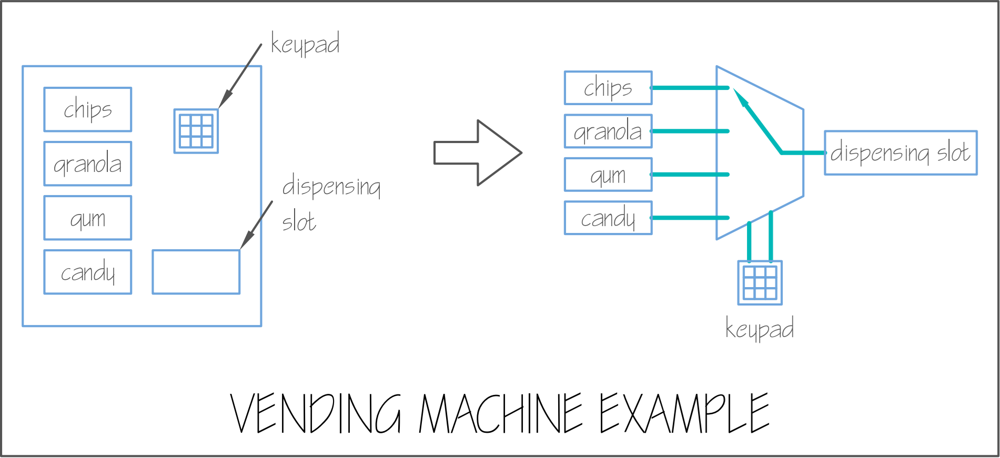
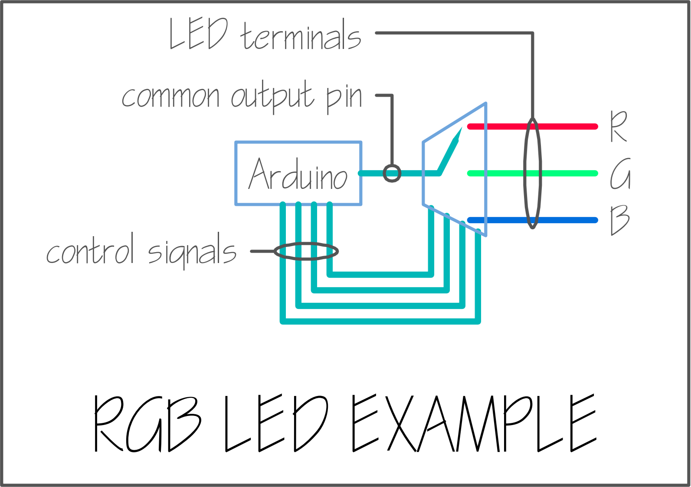

Another Futile Effort
My slow burn realization that I won’t be able to use a multiplexer as an IO expander for RGB output.
It looks like using a multiplexer as a PWM expander is not going to work. As previously discussed, in order to wire up three RGB LED strips to change colors at different frequencies, there is need for 12 analog output pins, one each for red, green and blue on each of the RGB LED strips. For the Arduino that we have selected, this will completely max out the number of analog output pins I have.
A couple months ago I tried to use a constant current I/O expander to write to PWM pins, but my tests did not yield favorable results. I did some googling and found that some developers will use a multiplexer as a way to increase the number of I/O pins to write to (or read from). I found the CD74HC4067 part, which is a 16-1 mux (with 4 control signals) which would provide ample outputs for the number of analog signals required by ColorClock.
Mux for PWM Output? Maybe?
Back to Computer Engineering 101
To review some digital logic, a multiplexer is basically a switch that can select from many inputs. When I used to teach, I compared it to a vending machine. There are many inputs (e.g. chips, granola, gum, candy) and one output (your selection). We type in a code on the keypad to select what kind of snack we want.

Wishful Thinking 🥺
We can flip this diagram 180 and instead of having many inputs to one output, we can have one input to many outputs. If we change the selection fast enough, we can write to all of the outputs (allegedly) virtually simultaneously.

So we can write the PWM value for a red pin, change the channel, write to the green pin, change the channel, write to the blue output, etc. My thought was because our eye’s persistence of vision, we wouldn’t be able to detect any flickering.
Buuuuuuut… that wasn’t the case 😑 My tests showed significant flicker (even only writing to two channels) and the colors just didn’t display properly. The videos below show the results of my tests.
Test Results
In all of the tests described below, I am trying to display magenta on my RGB LED:
void setup()
{
//____________________________________________
// Common pin that all values are written to
//____________________________________________
pinMode(common_pin, OUTPUT);
//____________________________________________
// Display the color magenta,
// i.e. max values for red and blue, no green
//____________________________________________
color = RgbColor(0xFF00FF);
//____________________________________________
}This video is a compilation of all tests described below. Because the video is less than a minute I wasn’t able to embed it into the site.
Test 1: Perform analogWrite and Channel Select Sequentially
void loop()
{
//____________________________________________
// NOTES:
// 1) `Rgb::RED`, `Rgb::GRN`, `Rgb::BLU`
// are values from an enumeration
// 2) muxxy is the multiplexer object
//____________________________________________
analogWrite(common_pin, color.rgb_[Rgb::RED]);
muxxy.channel(0);
analogWrite(common_pin, color.rgb_[Rgb::GRN]);
muxxy.channel(1);
analogWrite(common_pin, color.rgb_[Rgb::BLU]);
muxxy.channel(2);
}The light should be displaying a magenta color, i.e. equal voltage on the red and blue pins, and no voltage on the green pin. Instead, the light looks white, which equates to equal voltage on each of the red, green and blue pins.
Test 2: Set Channel Before analogWrite
muxxy.channel(0);
analogWrite(common_pin, color.rgb_[Rgb::RED]);
muxxy.channel(1);
analogWrite(common_pin, color.rgb_[Rgb::GRN]);
muxxy.channel(2);
analogWrite(common_pin, color.rgb_[Rgb::BLU]);There is no significant different between selecting the channel before the analog write.
Test 3: Only Write to Red Channel
muxxy.channel(0);
analogWrite(common_pin, color.rgb_[Rgb::RED]);Only writing to one channel displays the color properly. This test was performed just to ensure it was actually writing the value.
Test 4: Only Write to Red and Green Channels
muxxy.channel(0);
analogWrite(common_pin, color.rgb_[Rgb::RED]);
muxxy.channel(1);
analogWrite(common_pin, color.rgb_[Rgb::GRN]);
Debug::print_labeled_int("green val: ", color.rgb_[Rgb::GRN]);There is no green in magenta, so this test should only display red on the LED. Instead, we are seeing green flickering, and not any red at all. I also output a serial print for the value of green to ensure that green was indeed set to zero, and this was true.
Test 5: Reset Output to 0
muxxy.channel(0);
analogWrite(common_pin, color.rgb_[Rgb::RED]);
analogWrite(common_pin, 0);
muxxy.channel(1);
analogWrite(common_pin, color.rgb_[Rgb::GRN]);
analogWrite(common_pin, 0);Resetting the output pin to zero before switching channels just makes it look more choppy. Green is still displayed, though it shouldn’t be.
We Can’t Have Everything
So… I’m sticking to the PWM (analog) out pins from the Arduino for now. I also wanted to have a variable output for the light-up arcade buttons on the participant control panel so the brightness of the buttons would change as a result of participant interaction. I won’t be able to do this because I have no free analog output pins 😒
In addition to the outputs for the light display, I also need digital input pins from the participant and programmer control panels (the programmer control panel will be hidden from the audience and is used for time set control). So I will proceed to test the previous I/O expander I used (Adafruit AW9523) for digital input and hope it works for this purpose.
Hindsight is 20/20
In retrospect, I really should have just selected individually addressable LED strips for the light display. This would have eliminated all need for analog output because I would have been able to control the lights with a simple I2C line. But the code was already written assuming PWM outputs, and I didn’t want to write another interfacing layer. But with all the extra code I’ve had to write to test these additional modules, an interface layer to I2C would have been trivial.
But… we’re here now. Initially, I was only anticipating one LED strip, a color clock that would cycle over 24 hours, so I would have only needed three PWM pins for the light display. But scope creep happened (for good reason - this design is way more interesting) and now we have four LED strips, all cycling through the spectrum at different frequencies.
There’s One Win…
In other good news, I wrote the code to modify colors based on participant input, so yay!
Alright… now I’m back to testing the original I/O expander, this time to take digital input 😵💫